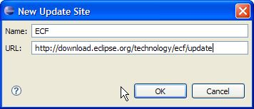

There are several different ways that you can download and install ECF.
See the Downloads below for details about ECF installation.
 Eclipse Communications Framework 0.6.2 "Stable" build is now available. See New and Noteworthy for this release.
Eclipse Communications Framework 0.6.2 "Stable" build is now available. See New and Noteworthy for this release.
|
|
System Requirements
|
|
ECF plugins will be built in Java and will be portable to any platform supported
by Eclipse. For components that might not run on Eclipse (e.g. servers), all
ECF-created code will be built to depend only upon pure Java Standard Edition
(1.4). We also will look to support OSGI Foundation as a minimum runtime platform.
You will need the following already installed on your machine:
|
|
ECF Downloads |
|
Option 1 - ECF Update Site
Option 2a - ECF SDK The zip below contains all ECF core plugins and example applications. First-time users can get started quickly by simply downloading and installing this zip:
- Download
- Unzip into your Eclipse installation directory (e.g. C:\eclipse)
- Launch Eclipse (you may need to use the -clean command line switch
or delete your configuration directory)
- Problems? Check the FAQ entries.
- Major features/changes in ECF SDK 0.6.2.S20060204 "Stable" Build Date 2006-02-04, from previous builds:
See New and Noteworthy for this ECF SDK 0.6.2 release.
Option 2b - ECF Individual Plugins Below are listed the various individual ECF features. These features can be downloaded and installed separately. If you wish to have/install all the ECF features, see Option 2a above.
- JMDNS Provider
Example Applications
- Real-time Collaboration Features
- Fileshare
Tests
Option 3 - ECF from CVS
- Create a new workspace (recommended).
- Define a new Java Classpath Variable named JAVA_HOME that points to
your JDK 1.4.x installation (e.g. C:\jdk1.4.2).
- Import the ECF team project set for anonymous access:
http://www.eclipse.org/ecf/org.eclipse.ecf.docs/ecf-anonymous.psf
or ECF team project set for committer's access:
http://www.eclipse.org/ecf/org.eclipse.ecf.docs/ecf-committer.psf
(when using anonymous access, enter "anonymous" as the
username, leave the password field empty, and check "save password").
- Launch either or both of the following run configs: ECF Example
Collab Client 1 or ECF Example Collab Client 2 with either the
Eclipse Run->Run... or Run->Debug... config dialogs.
|
|
|
ECF JAR (Java Archive) Files via Eclipse Update Manager |
|
The following Eclipse Communications Framework JAR files are available via the Eclipse Update Manager:
| File |
Build Date |
| org.eclipse.ecf.collab - 0.6.2 |
2006-02-04 |
| org.eclipse.ecf.core - 0.6.2 |
2006-02-04 |
| org.eclipse.ecf.datashare - 0.6.2 |
2006-02-04 |
| org.eclipse.ecf.fileshare - 0.6.2 |
2006-02-04 |
| org.eclipse.ecf.example.clients - 0.6.2 |
2006-02-04 |
| org.eclipse.ecf.provider.jmdns - 0.6.2 |
2006-02-04 |
| org.eclipse.ecf.serverfeature - 0.6.2 |
2006-02-04 |
| org.eclipse.ecf.xmpp - 0.6.2 |
2006-02-04 |
|
Directions to configure Eclipse for ECF JAR file updates
|
Activate ECF JAR (Java Archive) update connection:
- Save this http://www.eclipse.org/ecf/ecf-update.xml file to your local disk.
- Go to Eclipse Help => Software Updates => Find and Install => Search for new Features to Install => Next.
- Select Import Sites... button.
- Choose the "ecf-update.xml" file saved in step number 1.
|
In Eclipse, go to Help menu > Help Contents > Workbook User Guide
|
- In the Workbook User Guide, navigate to:
- Tasks
- Updating features with the update manager
- Installing new features with the update manager
- In Installing new features with the update manager, follow steps 5 through 13
|
Alternate directions to configure Eclipse for ECF JAR file updates
|
In Eclipse, go to Help menu > Help Contents > Workbook User Guide
|
- In the Workbook User Guide, navigate to:
- Tasks
- Updating features with the update manager
- Installing new features with the update manager
- In Installing new features with the update manager, follow steps 1 through 13
- In step #4, in the New Update Site dialog:
- For "CompanyA" enter: ECF updates
- For the URL enter: http://download.eclipse.org/technology/ecf/update
As shown in this dialog:

|